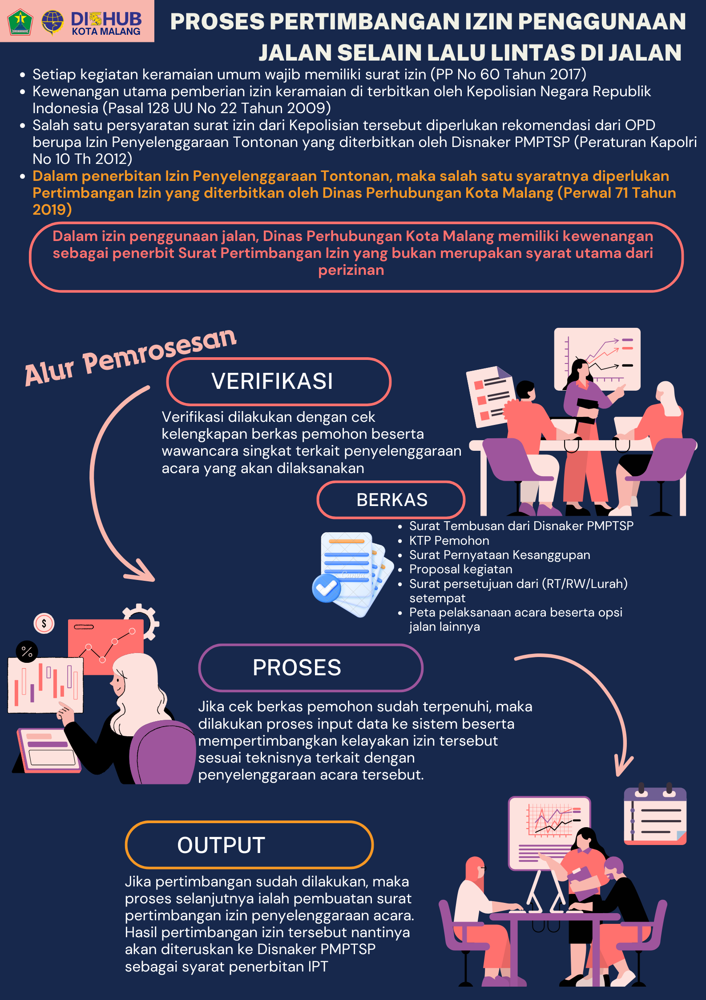

Alur Perizinan Kegiatan
Bagian ini menjelaskan posisi Dishub sebagai pemberi pertimbangan teknis, sedangkan izin penyelenggaraan dan izin keramaian diproses oleh instansi berwenang.
Lihat gambar alur lampiran

Peran Dishub
Pertimbangan izin, bukan penerbit izin kegiatan.
Dishub menilai aspek teknis lalu lintas, penggunaan ruas jalan, dampak terhadap arus kendaraan, kebutuhan rekayasa lalu lintas, serta penataan parkir. Status yang diberikan admin bersifat pertimbangan izin untuk membantu proses lanjutan pemohon.
Form Pengajuan
Data Pemohon dan Kegiatan
Gunakan format jam 24 jam, misalnya 08.30 atau 19.00.
Admin Dishub
Login Dashboard Admin
Dashboard admin membaca data langsung dari Google Sheets melalui Apps Script. Spreadsheet tidak perlu dibuka manual.